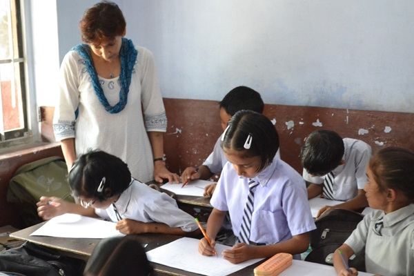
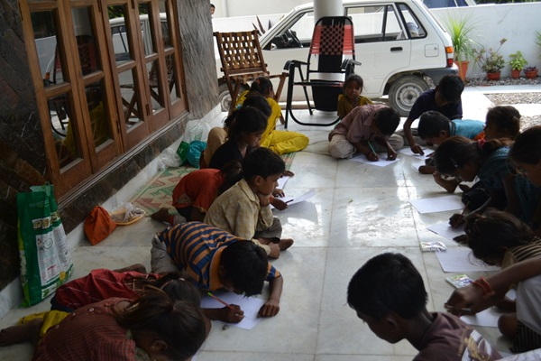
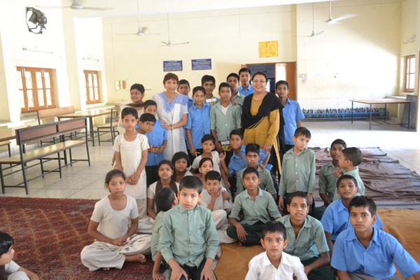
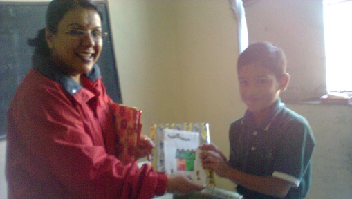
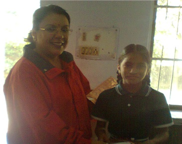

Student’s participated with great enthusiasm , it was a learning experience for one and all.

Issues regarding misuse of polythene bags and garbage management were discussed, the beauties of nature were admired. The children then participated in an Art Competition.
Prizes were awarded to all participants and additional Prizes were given to the best three.
Snacks were offered to the children, it was a rewarding experience for one and all.

An interactive session on importance of personal Hygiene and the need to preserve a clean environment was conducted.
Games using principles of simple mathematics were part of the activity. The children enjoyed the games , prizes were awarded for active and enthusiastic participation. It was a meaningful interaction.

Ms Sonia Singh conducted a card making competition for students in Saraswati Holy Bless School. Special Prizes were awarded to the best three creative performers and participation prizes were awarded to all participants.

